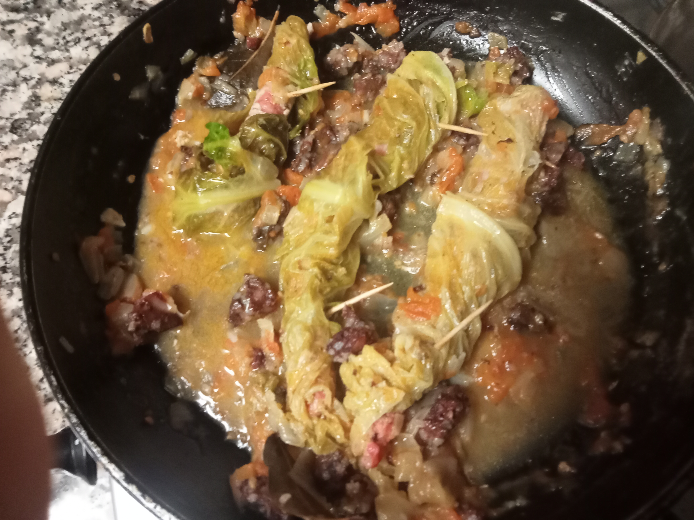

Sausages with savoy cabbage

Description
In this page you will find a recipe of fresh sausages with savoy cabbage for two persons.
A hearty meal perfect for cold days with some greens, perfect to tell your doctor you have been eating your veggies while still enjoying succulent meat.
The side dish is up to you to choose, but I think rice would fit the best with the sauce of the dish.
Ingredients
- 6 Fresh sausages;
- Enough savoy cabbages leaves to fully wrap the sausages;
- Half of a big onion;
- Two cloves of garlic;
- 150 grams of small pieces of bacon(avoid using it if you wish for a healthier meal);
- Salt;
- Pepper;
- 2 tomatoes(cut them in small pieces);
- Olive oil;
- 2 bay leaves;
- 100ml of white wine;
- cooking broth from the cabbage(optional).
Steps
- Boil the cabbage leaves until they get soft(20 minutes);
- Wrap the sausages in the leaves. Use a toothpick on both sides of the sausages to make sure the leaves don`t unwrap;
- Turn on the stove to braise the onion and bacon with the help of the olive oil. When the onion is translucent add the garlic (Don`t forget to mix) ;
- Add the tomatoes and bay leaves. Let it cook until the tomatoes are almost melted;(Don`t forget to mix)
- Add the sausages and season the meal with the white wine, salt and pepper. If there is not much sauce add the cooking broth from the cabbage;
- After 30 minutes you can dig in.
Home